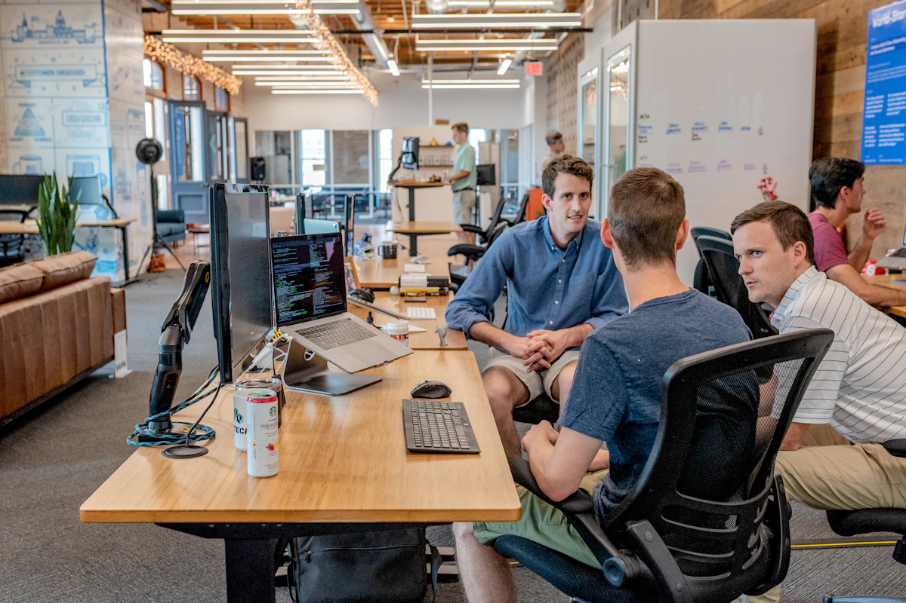
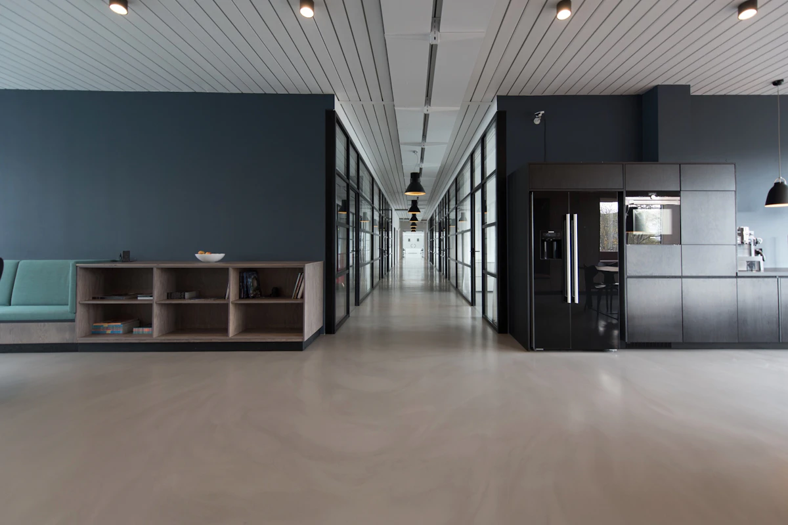
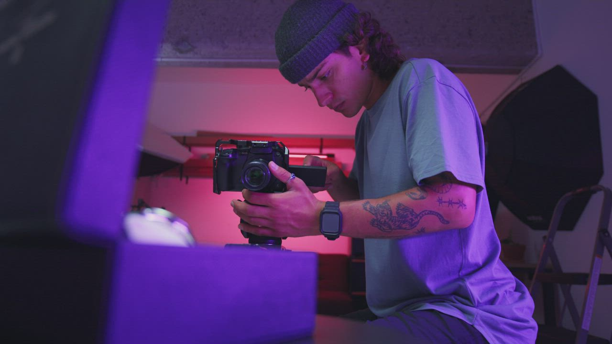

Digital strategy · Video storytelling · Creative design
The JU.ADMOTION journal
Ideas for brands ready to grow with purpose.
Practical notes on digital marketing, video storytelling and creative design—made to help you make your next move with more clarity.
Thoughtful ideas. Useful takeaways.
Explore the journal
Notes for your next idea.
6 articles

Strategy4 min read
A clearer content strategy starts with one goal
Before planning a month of posts, get specific about what your content needs to do for the people you want to reach.
Read article↗
A content calendar is a useful tool, but it is not a strategy on its own. A strong plan begins with a clear business priority and a real understanding of the audience you want to help.
Start with the outcome
Choose one primary goal for the next campaign or planning period: build awareness, explain an offer, start more conversations, or support an upcoming launch. A focused goal makes it easier to decide what belongs in the plan—and what does not.
Give every post a job
Balance useful education, brand perspective, proof of your process, and a clear invitation to take the next step. Each post should make sense to someone encountering your brand for the first time.
Keep the plan flexible. Review the questions people ask and the posts they save or share, then use those signals to shape what you make next.
Video editing4 min read
Make the first three seconds earn attention
A strong short-form video opening is clear, immediate and relevant—not just fast for the sake of being fast.
Read article↗
The opening moments help viewers decide whether a video is meant for them. Instead of beginning with a long introduction, lead with the most useful idea, a specific question, or a visual that sets up the story.
Use on-screen text to make the topic clear without sound.
Cut pauses that do not add meaning, but leave enough room for the message to land.
Then make sure the rest of the edit delivers on the opening. A relevant, understandable video earns more trust than a dramatic hook that promises something the content never provides.
Meta ads5 min read
A simple starting point for Meta ad creative tests
Learn from your creative tests by changing one meaningful idea at a time and keeping the campaign objective in view.
Read article↗
Ad creative testing is more useful when each variation has a reason to exist. Rather than changing the visual, copy, audience and offer all at once, make a small set of purposeful variations around one hypothesis.
Test a clear variable
For example, compare two opening messages while keeping the offer and format consistent. Or keep the message steady and compare a product-led visual with a process-led one. This makes the result easier to interpret.
Measure against the goal
Use a success measure that matches the campaign objective, and give the test enough time and budget to gather meaningful data. Results can vary with audience, season, placement and account history, so treat each test as a learning opportunity—not a guarantee of future performance.
Creative design4 min read
Create a visual system people can recognise
Consistency does not mean every post looks identical. A few intentional design rules can make a feed feel connected and distinct.
Read article↗
A recognisable visual identity helps your audience connect separate posts to the same brand. You can create that connection without repeating the exact same layout every time.
Choose a few useful rules
Set a focused colour palette and decide how accent colours are used.
Choose a small type system with clear heading and body styles.
Keep spacing, image treatments and logo placement consistent.
Use these rules as a foundation, then vary composition to suit the content. A carousel explaining a process may need a different layout from a campaign announcement while still feeling like it belongs to your brand.

Strategy4 min read
Turn a project brief into a consistent brand voice
A short messaging guide gives everyone creating content a shared starting point, from the first caption to the final edit.
Read article↗
A brand voice should make it easier to recognise and understand your business. It does not need to be a long document: a few clear principles can make everyday creative decisions more consistent.
Capture the essentials
Write down who you are speaking to, what they care about, what your brand helps them do, and the tone you want to use. Add a few examples of language that sounds right for your business—and a few that does not.
Keep the guide close to your content brief. When the audience, goal and key message are clear, design and copy can work together instead of competing for attention.

Video editing3 min read
A practical checklist before publishing a reel
A quick final review can catch the small issues that distract from an otherwise polished short-form video.
Read article↗
Before publishing, watch the video once as a viewer—not just as the person who edited it. Check that the message is easy to follow and that the ending gives the audience a natural next step.